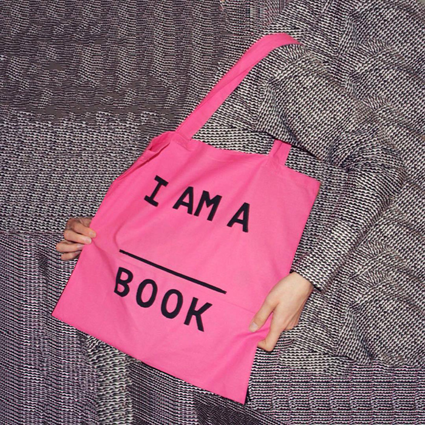
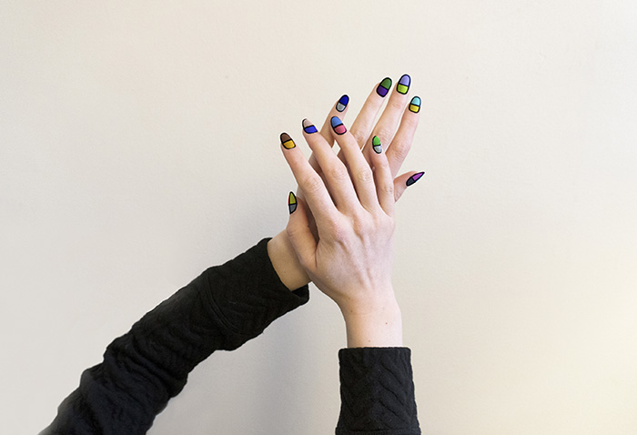
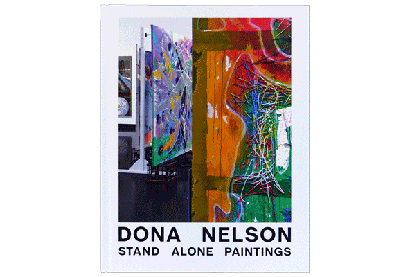
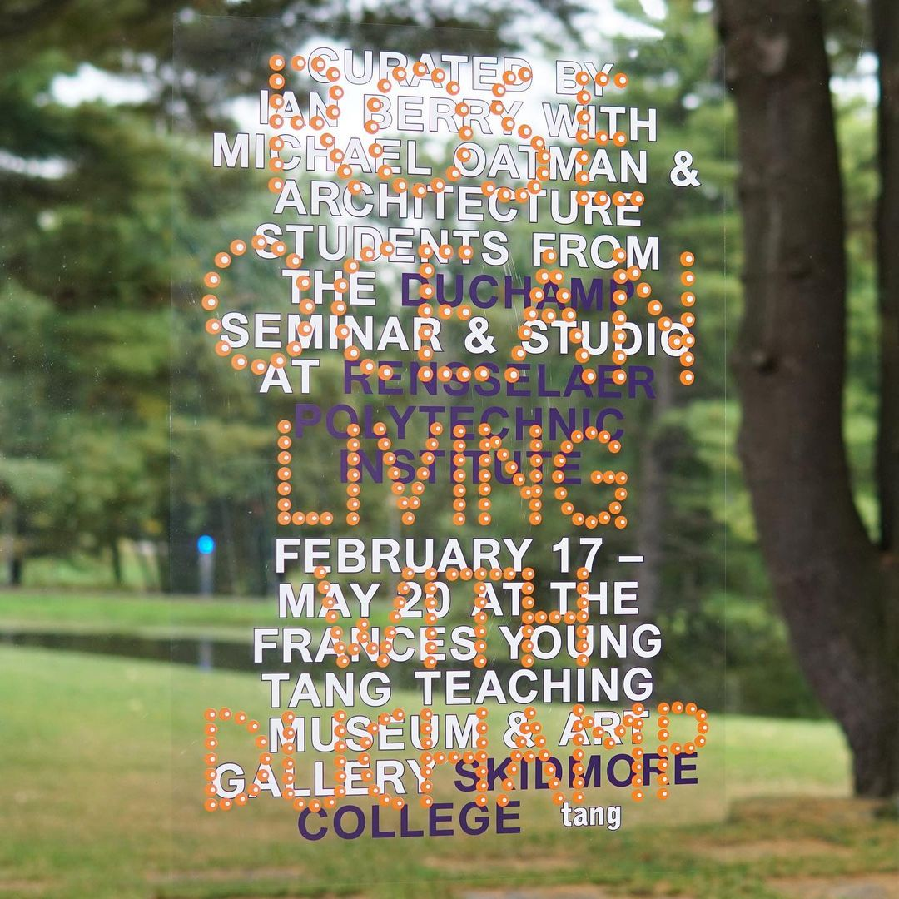
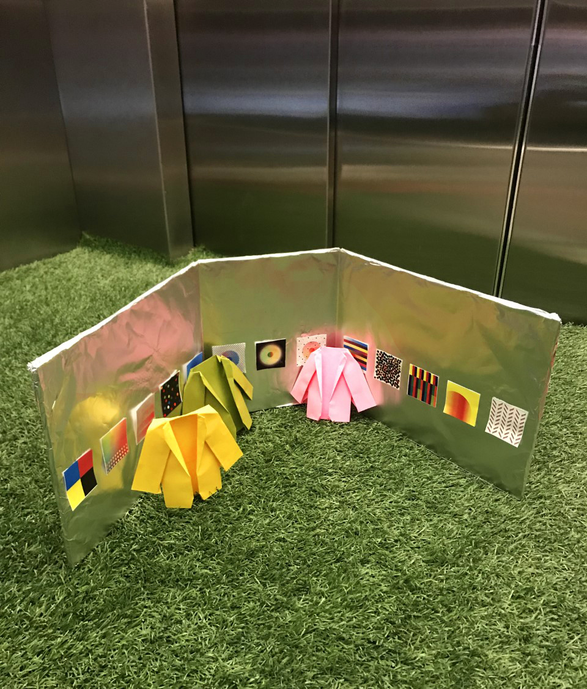
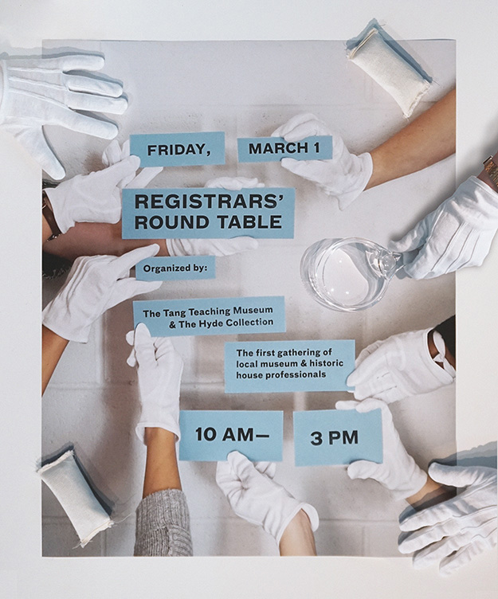
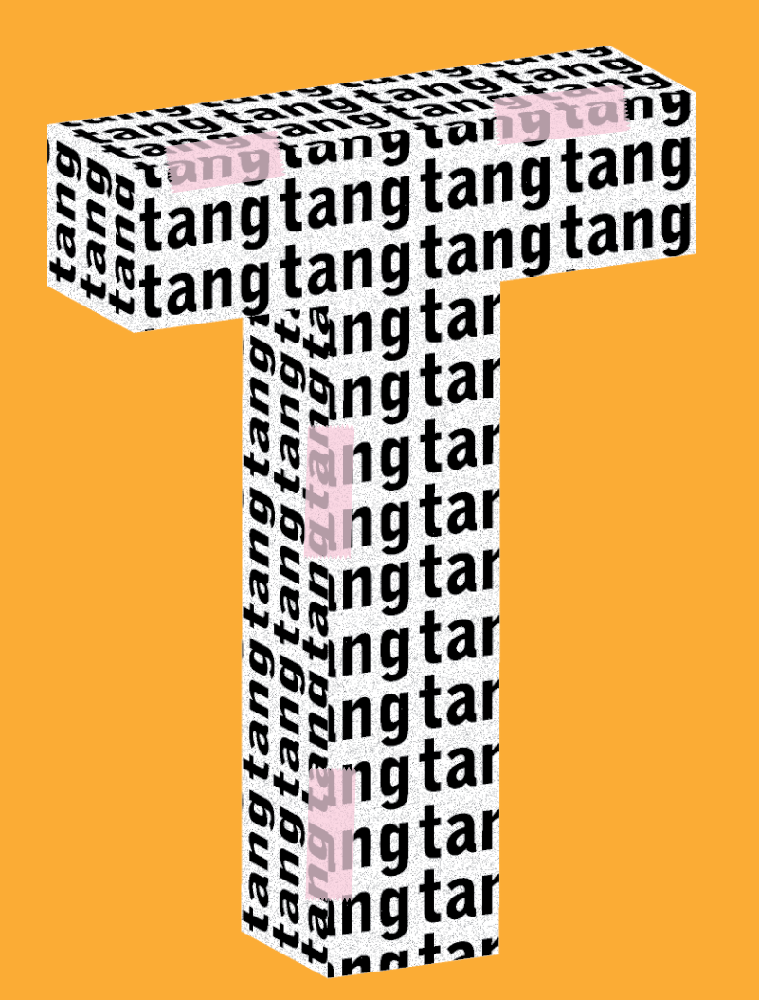
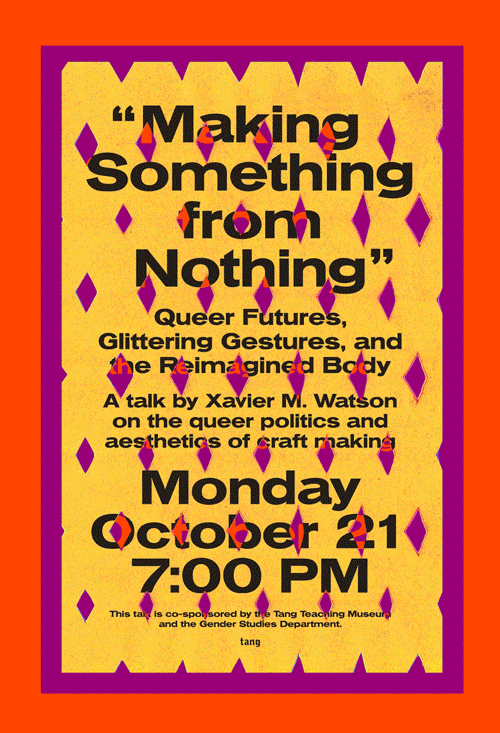

I Am A ______ Book, Totes for booth at the Toronto Art Book Fair, 2017

{kind=link}
Machine Project, Poster for 2016 Exhibition, screenprinted by Paul Morgan


Give a damn., Exhibtion postcards for visitors to use, 2018


Birth Stories, Event Poster for Laila Morgan, 2017


Other Side: Art, Object, Self, Title treatment, 2017

Everything I Touch is Color Correct, X-rite nails, Photograph 2016

{kind=link}
Whole Grain: Experiments in Film and Video, Ernie Gehr, Poster 2018


Borrowed Light: Selections from the Jack Shear Collection, Exhibition Cataloge 2017

Jean Tschanz-Egger
☉ Virgo ↑ Pisces ☾ Cancer
☉ Virgo ↑ Pisces ☾ Cancer
Dona Nelson: Stand Alone Paintings Exhibition catalogue, 2020

{kind=link}
Rose Ocean: Living with Duchamp Exhibition poster, 2018

{kind=link}
Fall Calendar, Mailer with events 2019

Whole Grain: Experiments in Film and Video, Milford Graves: Full Mantis, Poster 2019


Exploring Museum Careers, Poster 2018


Prototype of Elevator Music 39: BUG, with Rebecca McNamara and Linked by Air, 2019

{kind=link}
Registrars' Round Table, Poster 2019

{kind=link}
Whole Grain: Experiments in Film and Video, The Kuchar Brothers, Poster 2017


Test for a new store banner for the Tang Museum, 2017

{kind=link}
See the Invisible, Poster 2017


Thumbdrive, Sculpture 2015

-

Making Something From Nothing: Queer Futures, Glittering Gestures, and the Reimagined Body, Poster 2019

{kind=link}